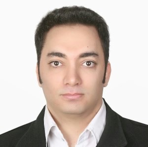

Big data & data science
Architecture of large-scale data platforms and analytics, from batch and streaming ingestion to machine learning in production.
Hello, I'm Vahid.
Computational Systems Engineer
Big data · Cloud, DevOps & MLOps · Security & reliability · Machine learning · HPC · Bio-inspired AI
More than 15 years of experience designing, building and operating large-scale systems, from banking data platforms and security to cloud infrastructure, machine learning and high-performance scientific software.

Computational systems engineer with interdisciplinary expertise in big data architecture, cloud infrastructure, DevOps and MLOps, security and reliability, data science, machine learning, performance-oriented software development, and bio-inspired AI.
Over more than fifteen years, this has included application security and system design for banking and government institutions, the architecture of a national bank's big-data platform and fraud-detection system, the founding and technical leadership of a start-up, and independent consulting in cloud, data and AI.
Keeping up with science is part of my routine. Currently pursuing my continuing education through a Master's in High Performance Computing Engineering at Politecnico di Milano, with research interests in scalable simulation systems, parallel computing, and emerging quantum machine learning paradigms.
Architecture of large-scale data platforms and analytics, from batch and streaming ingestion to machine learning in production.
Private and public cloud infrastructure, CI/CD, automation and ML model delivery, with monitoring, high availability and cost efficiency built in.
Application security, secure SDLC and system hardening, from penetration testing and code review to WAFs, honeypots and SIEM.
Performance-oriented software in modern C++, CUDA and MPI, and applied AI from LLM agents to physics-informed and bio-inspired models.
Fifteen years across security, big data, AI and my own companies, always hands-on.
Sep 2018 – Present
Milan / Tehran
Self-employed · AI, cloud, data & HPC
Apr 2015 – Sep 2018
Tehran
Sadad Informatics Corp. · Melli Bank Iran
Jul 2008 – Mar 2015
Tehran
Tosan · Saba System Sadra
My research roles (OpenWorm Foundation and University of Tehran) are in the Research section.
A few systems I designed and built myself or together with my teams.
An on-premise Hadoop/Spark platform on OpenStack for a national bank. It replaced a proprietary stack, cost about 5× less, and two teams built on it every day.
Streaming and batch ML scoring on banking transactions, so suspicious activity is scored in near real time.
A Linux WAF with HTTPS offloading, load balancing, high availability, self-healing monitoring and a signature-update centre, used by government and financial web systems.
A working multi-agent system on Claude with parallel sub-agents, custom MCP tools and structured outputs. Every result is checked automatically before I use it.
A C++17 telemetry anomaly-detection pipeline, built as one full software-engineering cycle: requirements, architecture, V&V, CI/CD, and Apptainer + SLURM runs on CINECA's Galileo100.
Our own OpenStack cloud with GitLab CI/CD for e-commerce and real-estate clients. It cost about 30% less to run than before.
End-to-end software engineering as one documented and traceable cycle: requirements, architecture, implementation, verification and validation, CI/CD, release and operation. Applied in full on AstraLog-HPC, from use cases to SLURM runs on a supercomputer, and earlier through secure-SDLC training for banking and government developers.
Research has been a long-standing part of my week: about 20% of my time, including evenings and weekends, is dedicated to science. For more than ten years this has ranged from computational biology and neuroscience to mathematics, physics and robotics, with a long-term focus on bio-inspired AI and quantum computing.
My usual week
From biology to math, physics and robotics, and a long-term vision of bio-inspired AI and quantum computing.
Ion channels and the nervous system of the small worm C. elegans. This is where my M.Sc. studies in biochemistry and my OpenWorm work began.
Models that fit real data: Hodgkin–Huxley and Markov models, numerical linear algebra and numerical methods for PDEs.
WormMathBookBiophysics of cells and the mechanics of bodies: finite-element models, and neural networks that respect physical laws (PINNs).
M.Sc. studies in Mechatronics: control, signals and systems, neural networks. Today I simulate a worm's nervous system and body together.
How a small nervous system makes behaviour, and what this can teach the next AI models. MatNeuron is a web-based simulation environment that bridges neural networks with biomechanical systems.
MatNeuronMy long-term vision: the next generation of scalable systems will join HPC and quantum computing, and open the way to quantum machine learning and new neuro-inspired AI. I study HPC as the first step.
I proposed and led ChannelWorm (2015–2018): I curated patch-clamp data from papers, fitted Hodgkin–Huxley models, estimated kinetics for channels with no data, and built the Python APIs and validation tests used across OpenWorm.
ChannelWormA real-time C. elegans simulator: a Hodgkin–Huxley neural model joined to a finite-element body. The C++ core has CUDA, OpenCL and OpenMP back-ends, runs about 40× faster than serial, and runs on CINECA's Galileo100 with SLURM.
3D viewer CodeA compact ion-channel model (about 5 parameters) that fits a curated set of about 270 channels in seconds, with an ML predictor of channel kinetics from the amino-acid sequence. A proof of concept, still in development.
chModeler ChopenA physics-informed graph neural network in PyTorch, with ESM2 protein-language-model embeddings, that predicts how ion channels open and close.
Lab of Systems Biology and Bioinformatics: I predicted ion-channel kinetics from protein sequence with ML and sequence alignment, and built a dataset of more than 200 channels from the literature.
I set up and mentored a student team from different fields to study smarter pacemaker and ECG algorithms, using Python and PhysioNet data.
Politecnico di Milano, Milan
Parallel Computing (CUDA/OpenMP), Advanced Methods for Scientific Computing (modern C++), Numerical Methods for PDEs, Numerical Linear Algebra, Numerical Analysis for ML, Applied Statistics, Computing Infrastructures, Software Engineering for HPC.
Sharif University of Technology, Kish campus
Coursework completed: artificial neural networks, advanced automatic control, signals and systems, dynamics.
Payame Noor University, Tehran
Coursework completed. Thesis topic (not defended): Computational Modeling of Ion Channels and Structure-Function Relationship Analysis.
Islamic Azad University, South Tehran
GPA 17.43/20, among the top graduates of my year.
I am open to full-time roles in Milan (on-site or hybrid) and remote roles in Europe, in software, data, AI/ML and HPC engineering. I am also happy to talk about research and open-science projects.